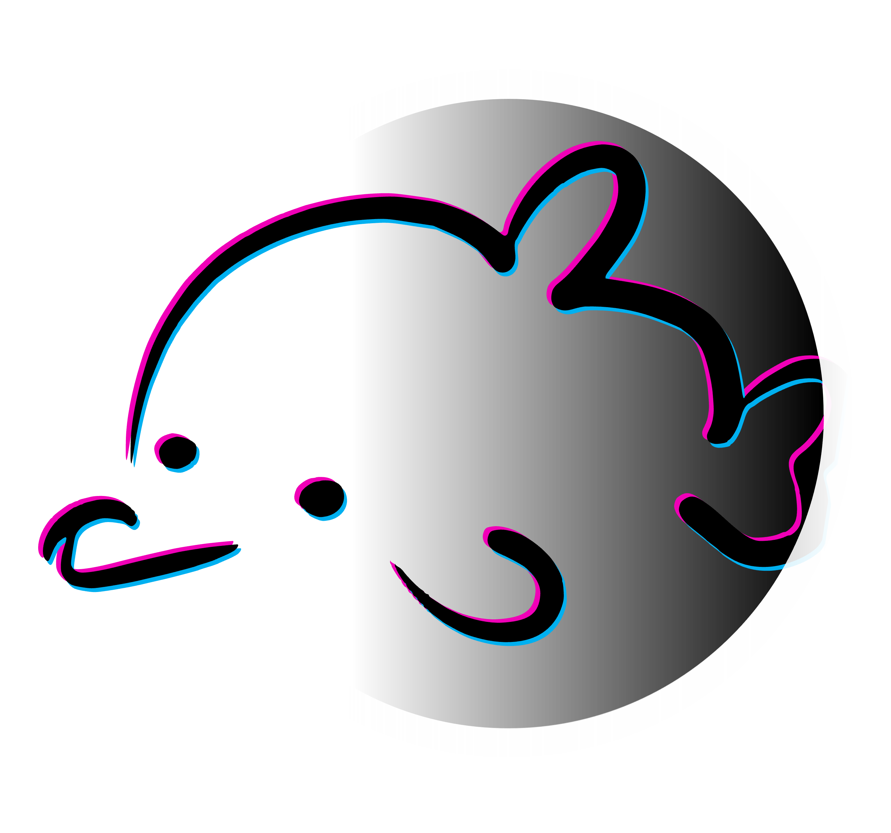

close
home
Home
forum
Social
format_paint
Paint
radio
Radio
sports_esports
Games
handyman
Random
hourglass_empty
Countdown
menu
home
forum
Social
format_paint
Paint
radio
Radio
sports_esports
Games
handyman
Random
hourglass_empty
Countdown
settings

close
Settings
alternate_email
Contact and help
TOTB12
everything in one website
VIRUS
These virus are safe to download but can damage your device if ran.
Be responsible of your actions.
Crash Any PC - cmd (Windows)
Delete all partitions (Windows)
Delete all content of drive (Windows)
Delete Any PC - tourstart (Windows)
Shutdown PC everytime it's turned on (Windows)
Disable I-net(Windows)
Rename all system files to .txt (Windows)
System Meltdown (Windows)
Delete System32 (Windows)